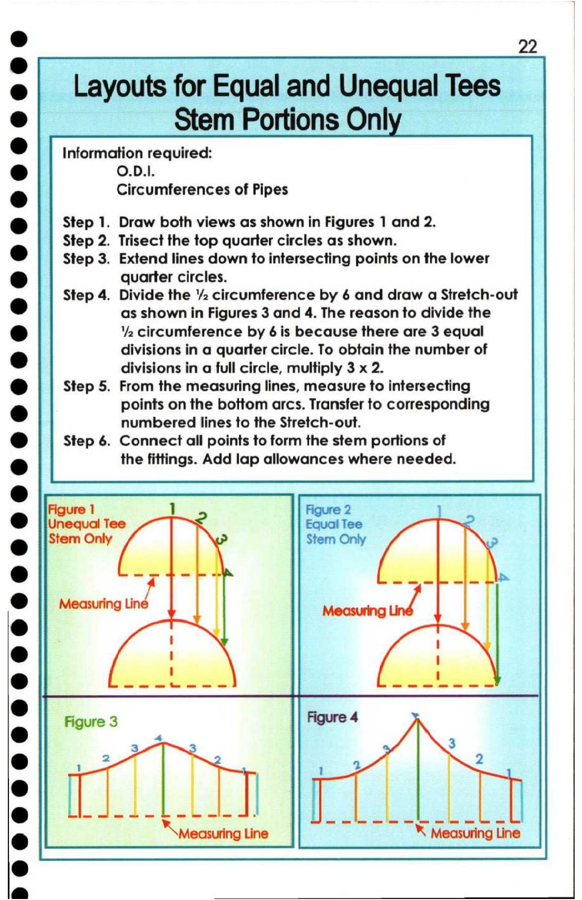

22. Layouts for Equal and Unequal Tees (Stem Portions Only)

|
@
e@| Layouts for Equal and Unequal Tees
es J
@| Stem Portions Onl
* Information required:
e O.D.1.
e Circumferences of Pipes
® Step 1. Draw both views as shown in Figures 1 and 2.
Step 2. Trisect the top quarter circles as shown.
* || Step 3. Extend lines down to intersecting points on the lower
@ quarter circles.
Step 4. Divide the 2 circumference by 6 and draw a Stretch-out
e as shown in Figures 3 and 4. The reason to divide the
@ ‘2 circumference by 6 is because there are 3 equal
e divisions in a quarter circle. To obtain the number of
divisions in a full circle, multiply 3 x 2.
e Step 5. From the measuring lines, measure to intersecting
points on the bottom arcs. Transfer to corresponding
e@
numbered lines to the Stretch-out.
r ) Step 6. Connect all points to form the stem portions of
* the fittings. Add lap allowances where needed.
*
Figure 1 Figure 2
@ Unequal Tee Equal Tee
* Stem Only Stem Only
@
- Measuring Measuring a
@
6
e
Figure 3 mpro 4
® 4 5
3
@ 1 2 1 2 2
®
@ ee es a ee spe ees Fess (cy: Ps Ea
e *\ measuring Line \ Measuring Line
Cd
a